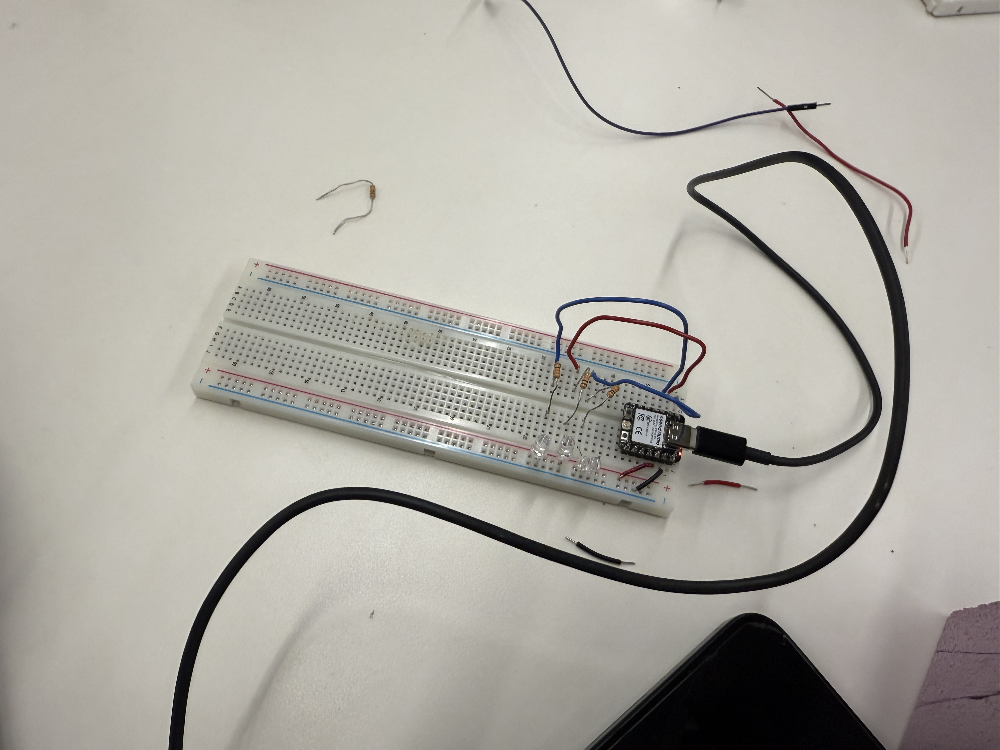

<div class="textcontainer">
<p class="margin"> </p>
<h3>Week 9: Radio, WiFi, Bluetooth (IoT)</h3>
<p class="margin">
For our networking project, we (me, Lynn, and Jolee) decided to make LEDs that would blink in turn with music from Spotify. To input the music into the code, we referenced the website Spotify for Developers for our web API reference (link to page https://developer.spotify.com/documentation/web-api/reference/get-audio-features)
</p>
<p></p>
<p class="margin">
Our breadboard with LEDs
</p>
<p class="margin">
We were origionally going to use the tempo of the Spotify API, however we had to switch gears as we realized that Spotify's API no longer gives the tempo of songs as Spotify depricated song tempos and many other features.
</p>
<h4>Assignment: [Program something with IOT]</h4>
</p>
<pre>
#include <WiFi.h>
#include <HTTPClient.h>
#include <Arduino.h>
#ifdef ESP32
#include <WiFi.h>
// #include <AsyncTCP.h>
#else
#include <ESP8266WiFi.h>
#include <ESPAsyncTCP.h>
#endif
#include <ESPAsyncWebServer.h>
AsyncWebServer server(80);
const char* ssid = "MAKERSPACE";
const char* password = "12345678";
const char* BASE_URL = "https://customer.api.soundcharts.com";
// AAPI credentials
const char* APP_ID = "JKUO-API_46F7FCC8";
const char* API_KEY = "748ca3461c67903e";
String songQuery = "Porch Light Noah Kahan";
const int yellow = D0;
const int green = D1;
const int blue = D2;
bool ledState = false;
unsigned long lastBlinkTime = 0;
unsigned long blinkInterval = 250;
// ---------- prototypes ----------
String urlEncodeSpaces(String text);
String getSongUuid(String songName);
String extractFirstSongUuid(String payload);
String songTitle = "";
int getTempo(String songUuid);
int extractTempo(String payload);
void blinkLED();
// -------------------------------
const char* PARAM_INPUT_1 = "Song Title";
const char index_html[] PROGMEM = R"rawliteral(
&lt;!DOCTYPE HTML>&lt;html>&lt;head>
&lt;title>ESP Input Form&lt;/title>&lt;
&lt;meta name="viewport" content="width=device-width, initial-scale=1">
&lt;/head>&lt;body>
&lt;form action="/get">
Song Title: &lt;input type="text" name="Song Title">
&lt;input type="submit" value="Submit">
&lt;/form>
&lt;/body>&lt;/html>)rawliteral";
void notFound(AsyncWebServerRequest *request) {
request->send(404, "text/plain", "Not found");
}
void setup() {
Serial.begin(115200);
pinMode(yellow, OUTPUT);
pinMode(green, OUTPUT);
pinMode(blue, OUTPUT);
digitalWrite(yellow, LOW);
digitalWrite(green, LOW);
digitalWrite(blue, LOW);
WiFi.begin(ssid, password);
WiFi.mode(WIFI_STA);
while (WiFi.status() != WL_CONNECTED) {
delay(1000);
Serial.println("Connecting to WiFi...");
}
Serial.println("");
Serial.print("IP Address: ");
Serial.println(WiFi.localIP());
server.on("/", HTTP_GET, [](AsyncWebServerRequest *request){
request->send_P(200, "text/html", index_html);
});
server.on("/get", HTTP_GET, [] (AsyncWebServerRequest *request) {
String inputMessage;
String inputParam;
// GET input1 value on <ESP_IP>/get?input1=<inputMessage>
if (request->hasParam(PARAM_INPUT_1)) {
inputMessage = request->getParam(PARAM_INPUT_1)->value();
inputParam = PARAM_INPUT_1;
} else {
inputMessage = "No message sent";
inputParam = "none";
}
request->send(200, "text/html", "HTTP GET request sent to your ESP on input field ("
+ inputParam + ") with value: " + inputMessage +
"<br><a href=\"/\">Return to Home Page</a>");
songTitle = inputMessage;
});
server.onNotFound(notFound);
server.begin();
while (songTitle == "") {
Serial.println("Waiting for song title...");
delay(1000);
}
String songUuid = getSongUuid(songTitle);
Serial.println("UUID:" + getSongUuid(songTitle));
if (songUuid == "") {
Serial.println("Could not find song UUID.");
return;
}
Serial.print("Song UUID: ");
Serial.println(songUuid);
int tempo = getTempo(songUuid);
Serial.print("Tempo: ");
Serial.println(tempo);
if (tempo > 0) {
blinkInterval = (60000UL / tempo) / 2;
Serial.print("Blink interval: ");
Serial.println(blinkInterval);
} else {
Serial.println("Could not get tempo.");
}
}
void loop() {
blinkLED();
}
String urlEncodeSpaces(String text) {
text.replace(" ", "%20");
return text;
}
String getSongUuid(String songName) {
HTTPClient http;
String url = String(BASE_URL) + "/api/v2/song/search/" +
urlEncodeSpaces(songName) +
"?offset=0&limit=1";
Serial.println("Request URL:");
Serial.println(url);
http.begin(url);
http.addHeader("x-app-id", APP_ID);
http.addHeader("x-api-key", API_KEY);
int code = http.GET();
Serial.print("Song search HTTP code: ");
Serial.println(code);
if (code <= 0) {
http.end();
return "";
}
String payload = http.getString();
Serial.println("Song search response:");
Serial.println(payload);
http.end();
return extractFirstSongUuid(payload);
}
String extractFirstSongUuid(String payload) {
int itemsIndex = payload.indexOf("\"items\"");
if (itemsIndex == -1) return "";
int uuidIndex = payload.indexOf("\"uuid\":\"", itemsIndex);
if (uuidIndex == -1) return "";
uuidIndex += 8;
int endIndex = payload.indexOf("\"", uuidIndex);
if (endIndex == -1) return "";
return payload.substring(uuidIndex, endIndex);
}
int getTempo(String songUuid) {
HTTPClient http;
String url = String(BASE_URL) + "/api/v2.25/song/" + songUuid;
http.begin(url);
http.addHeader("x-app-id", APP_ID);
http.addHeader("x-api-key", API_KEY);
int code = http.GET();
Serial.print("Song metadata HTTP code: ");
Serial.println(code);
if (code <= 0) {
http.end();
return -1;
}
String payload = http.getString();
Serial.println("Song metadata response:");
Serial.println(payload);
http.end();
return extractTempo(payload);
}
int extractTempo(String payload) {
int tempoIndex = payload.indexOf("\"tempo\":");
if (tempoIndex == -1) return -1;
tempoIndex += 8;
while (tempoIndex < payload.length() && payload[tempoIndex] == ' ') {
tempoIndex++;
}
int endIndex = tempoIndex;
while (endIndex < payload.length() &&
(isDigit(payload[endIndex]) || payload[endIndex] == '.')) {
endIndex++;
}
String tempoStr = payload.substring(tempoIndex, endIndex);
tempoStr.trim();
if (tempoStr.length() == 0) return -1;
return (int)(tempoStr.toFloat() + 0.5);
}
void blinkLED() {
unsigned long now = millis();
if (now - lastBlinkTime >= blinkInterval) {
lastBlinkTime = now;
ledState = !ledState;
digitalWrite(yellow, ledState);
digitalWrite(green, ledState);
digitalWrite(blue, ledState);
}
}
</pre>
</div>